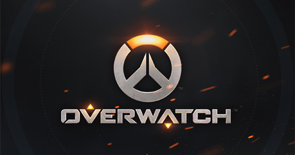

The best esports-site
Blizzard has revealed the final three Overwatch League team owners for the league's first season: Team EnVyUs in Dallas, OpTic Gaming in Houston and Comcast Spectacor in Philadelphia. The Overwatch League will begin on Jan. 10, 2018 and run through June. There will also be a series of exhibition games between all 12 teams that start on Dec. 6, and all pre-season and regular season games will be played at Blizzard Arena Los Angeles in Burbank for Season 1. This announcement confirms several reports from ESPN's Jacob Wolf over the past month that said these three organizations would be joining the league. It also puts the league at 12 starting teams, with nine based in North America, two in Asia and one in Europe. "With the first 12 teams in place, we’re now just a few short months away from the inaugural season of the Overwatch League," Mike Morhaime, CEO and co-founder of Blizzard Entertainment, said in a press release. "This is a huge milestone for the league; we can’t wait for the action to get underway and to see some of the top competitive Overwatch players in the world facing off to become the first-ever Overwatch League champions." Comcast Spectacor is the sports and entertainment arm of the American telecom giant, Comcast, and owns the Philadelphia Flyers NHL team. They'll be taking the league's Philadelphia spot, which previous ESPN reports claimed cost $20 million. "Comcast Spectacor is thrilled to play a central role in the Overwatch League’s inaugural season and energize the growing esports community in Philadelphia and beyond," Dave Scott, President and CEO of Comcast Spectacor, said in a press release. "An esports franchise is a great addition to our portfolio of sports and entertainment assets and we believe that Overwatch League is uniquely positioned to succeed." Envy will be taking the Dallas spot in the league, and recently recieved an eight-figure investment from Hersh Interactive Group. Envy currently fields League of Legends, CS:GO, Call of Duty, Halo, Rocket League and Overwatch teams. Their Overwatch team recently placed fourth in Overwatch APEX Season 3, making them the highest placing non-Korean team in the tournament. "We are beyond excited to be joining the Overwatch League and helping to build the future of esports in Dallas," said Mike "Hastr0" Rufail, owner and CEO of Envy. “Envy already has a significant history in competitive Overwatch, and we are pleased to be able to build upon that legacy in the league later this year." According to the press release, while Hersh has invested into Envy, the OWL team will be owned by a "wholly owned subsidiary of Team Envy." OpTic Gaming is best known for their Call of Duty team, but also fields a CS:GO roster as well as Halo and Gears of War teams. OpTic will be taking the Houston spot in the league. The organization recently announced a move to Dallas, though it is unclear if they will now instead move to Houston "It's an absolute honor to represent the great city of Houston in the Overwatch League," Hector "HecZ" Rodriguez, owner and CEO of OpTic Gaming. "This is another significant milestone in OpTic’s history and a testament to the loyal support of our fans. We’re excited to continue shaping the future of esports and bring the OpTic passion to the rapidly expanding Overwatch community." None of the 12 organizations in the league will be able to use any existing team branding in the Overwatch League, and will instead have to come up with new names and logos for their OWL teams.
